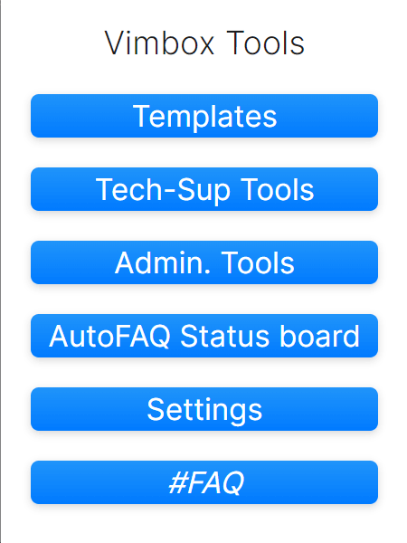
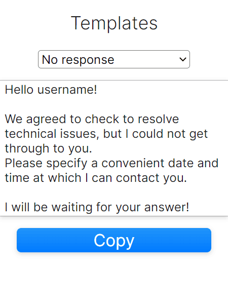
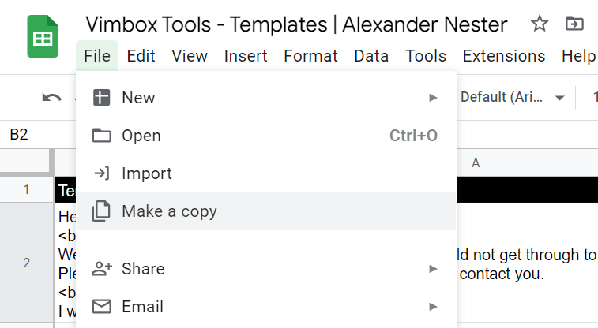
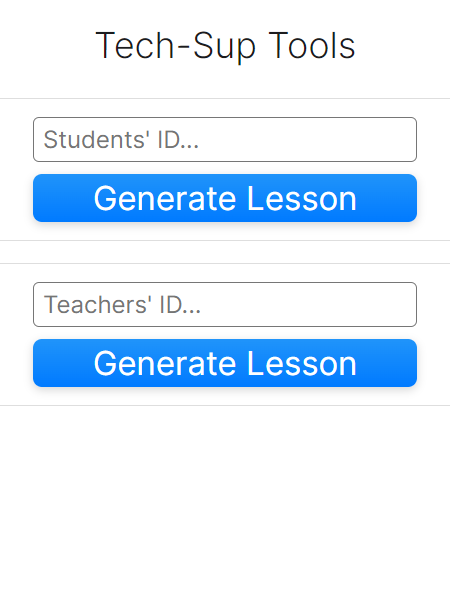
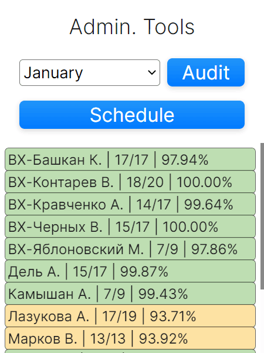
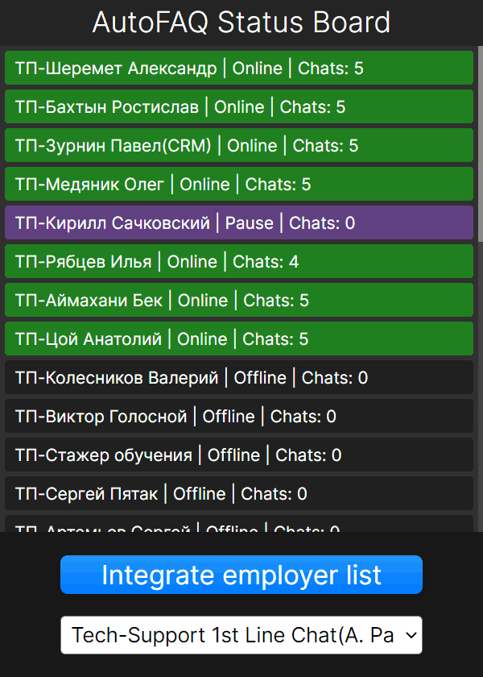
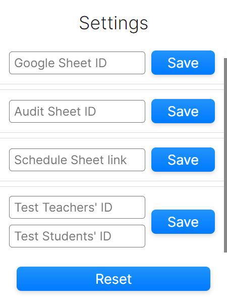

Vimbox Tools | release 2023.2, version 1.13.0
This FAQ page is only eligible for version mentioned above.
Development & support: Alexander Nester, @AN
Main Page
The main page of an application. May one be blessed on their's path.
Templates
'Templates' enables you to store your custom templates in Google Sheet document & access them anytime, which is drastically decreases time to find right one & send it to the client.
At the top side of extension one can find droplist of all the templates, click on it & it may reveal all stored templates within default google spreadsheet. You can change it's id in Settings tab.
Below the selector we placed templates' main text.
Below the main text area one may find a "Copy" button, clicking on it will put all the text from the template to your Windows Clipboard.
Let me dive out of formalities to instruct you on making custom template library.
Firstly, head in to the original templates list Google Spreadsheet to descry it.
Then make a copy of this document by clicking "File > Make a copy".
After a copy created, open it in your browser & copy id of renewed document of yours' and save it as a new ID in the extension settings.
Now that you accomplished easy steps, you have to understand the document logics.
Column of "A" serves upon template text
Column of "B" serves upon template topic
Cell of "C1" serves for templates limit onload.
Now you can replace my templates with your own, and if you went out of bounds and have settled more than three templates, be sure to increase the load limit at C1.
Remember: C1 is not a useless cell but a limiter without which the entire construction will refuse to work properly or even refuse to work at all.
The formula for limiting templates is pretty easy: it's how much cells in a column "A" minus one.
Now that you're ready to use your custom templates, use them wisely.
Tech-Sup Tools
At the moment, this page is still under development, but still it may land you a helping hand: one can now create test lesson through direct call to lesson-dashboards' api!
How does Students' ID works?
Inserting students' id into it's inputfield will produce a test lesson among your personal teacher account & student that you allued.
How does Teachers' ID works?
Inserting teachers' id into it's inputfield will produce a test lesson among your personal student account & teacher that you allued.
But remember to press "Generate Lesson" only if your mind is completely settled & you're sure about your decision.
Admin. Tools
This page is also under development, yet it may land you a helping hand: one can now see quality results of others' work through audit process.
Select right month, press "Audit" and you're ready to go! It will reveal you the pure truth about yourself & your colleagues. Sometimes it will lead to impartial results & can dispair you.
Interacting with "Schedule" button will only open a schedule service for our team. If link is already deprecated, you can manually set it in settings tab.
AutoFAQ Status Board
What a surprise: this is one of the pages that is completely ready to use.
Select employees group, press "Integrate" and you're ready to go! It will reveal every single employee that's currently working in AutoFAQ.
There's no other usecase to it for now.
Settings
Settings tab is here to set all up.
Google Sheet ID - It serves for templates. If you're templateless and have none on your own, leave it as it is.
Audit Sheet ID - Link to an auditing document that's providing us all the necessary information about quality of everyone's work. it oughtn't be changed.
Schedule Sheet link - link to a google spreadsheet document. Change it if current document is no longer valid or been deprecated.
Test Teachers' / Students' IDs - It serves for a lesson-generation purpose. If you are id-indigent, then lessons won't be generated.
Reset - complete reset, as if you reinstalled this extension with roots.
#FAQ
It's the page you are currently on.
Suggestions
Before thinking of any, consider that some of already known suggestions will never be implemented, such as having native support for multi-language or dark/light theme changer.
Only valuable suggestions that will have use to others will be implemented in descending order.
If you have any, provide them to me directly within Slack: @AN
Roadmap
February:
Finalize extension design project & follow it's nature since then.
Tableau integration to collect CSAT, AHT & OCC metrics according to allued timestamps.
March:
Fix possible unintended misbehaviours that may appear during use of an extension.
Develop extension auto-update system to keep everyone with up-to-date version.
Update Log
Release date: 08/02/2023
Development time since previous release: ~6 hours
Release date: 12/02/2023
Development time since previous release: ~7 hours
Release date: 23/02/2023
Development time since previous release: ~11 hours